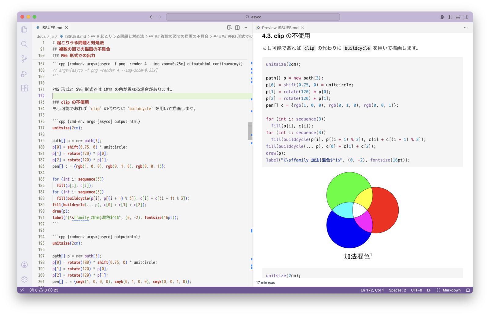

asyco を使うと Asymptote 言語で書かれた図をマークダウン文書に容易に埋め込めます。図の埋め込みには Visual Studio Code (VS Code) の拡張機能である Markdown Preview Enhanced (MPE) のコードチャンクを用います。マークダウン文書は、ブラウザや pandoc を経由することで PDF ファイルに変換できます。asyco は asy コマンドを包む bash スクリプトで、asy が出力する図形ファイルを標準出力に送ります。

asyco は Windows, macOS, Linux で使えます。次の環境が必要です：
env コマンドで bash スクリプトを実行でき、sort, awk などの基本ツールを使えるenv.exe のあるディレクトリ（例えば C:\opt\PortableGit\usr\bin や C:\Program Files\Git\usr\bin）が Windows のコマンド検索パス（Path）に含まれている必要があります。Markdown-preview-enhanced: Enable Script Execution が選択されている必要があります（初期設定では選択されていません）。さらに次のいずれかの環境が必要です：
asy コマンドで SVG (Scalable Vector Graphics) または PNG (Portable Network Graphics) 形式の図を出力できるasymptote.ualberta.ca:10007）に接続できる必要な環境の準備については setup.md を参照してください。
asyco のインストール先（例えば $HOME/bin や /usr/local/bin）は bash のコマンド検索パス（PATH）に含まれている必要があります。Windows では asyco のインストール先（例えば %USERPROFILE%\bin や C:\opt\PortableGit\usr\local\bin）を Windows のコマンド検索パス（Path）に追加します。Windows のコマンド検索パス（Path）は bash のコマンド検索パス（PATH）に取り込まれます。
以下の手順で asyco をインストールします。
asyco をインストール先にコピーします。asyco に実行権限を付与します。例えばインストール先が $HOME/bin の場合、bash のコマンド行で以下を実行します。
$ cp asyco ~/bin
$ chmod +x ~/bin/asyco
asyco のインストールには install.sh スクリプトも利用できます。インストールの詳細と動作確認については INSTALL.md を参照してください。
VS Code でマークダウン文書を開き、asyco を呼び出すコードチャンクを書いて実行します。
コードチャンクのオプションで：
cmd に env を設定args に asyco とそのオプションを設定output に html を設定次の例では args に asyco のオプション -M 1mm（図に 1mm の余白を設定）を追加しています。
```asy {cmd=env args=[asyco -M 1mm] output=html}
draw(scale(1cm) * unitcircle); // Asymptote code here
```
VS Code の Open Preview to the Side でプレビューを表示し、Run Code Chunk（ ▶︎ ボタン）または Run All Code Chunks（ ALL ボタン）でコードチャンクを実行します。
プレビューのショートカットメニュー（コンテキストメニュー）で Open in Browser を実行します。ブラウザで文書を印刷することで PDF ファイルを作成できます。ショートカットメニューの Export > HTML で HTML ファイルを作成し、pandoc コマンドで HTML ファイルを PDF ファイルに変換することもできます。
Asymptote http sever を使えば、ローカルの asy コマンドを使えなくても、Asymptote で書かれた図をマークダウン文書に埋め込めます。Asymptote http sever を使うには asyco の --remote オプションを指定します。サーバを --server オプションで設定しなければ、省略時値の asymptote.ualberta.ca:10007 が使われます。
```asy {cmd=env args=[asyco --remote] output=html}
draw(scale(1cm) * unitcircle); // Asymptote code here
```
図を PNG 画像として出力するには asyco のオプションに -f png を指定します。コードチャンクの output オプションには html を設定します（png ではありません）。次の例では、画像の解像度と表示倍率を変更し（-render 4 --img-zoom=0.25x）、画像を fig.png に保存します（-o fig）。
```asy {cmd=env args=[asyco -f png -render 4 --img-zoom=0.25x -o fig] output=html}
draw(scale(1cm) * unitcircle); // Asymptote code here
```
ローカルの asy コマンドを用いる場合、警告メッセージやエラーメッセージが表示されることがあります。
```asy {cmd=env args=[asyco --silent] output=html}
size(1cm);
dot("$O$", (0, 0));
```
上の例では、次のメッセージが表示されます。
: warning [unbounded]: x scaling in picture unbounded
: warning [unbounded]: y scaling in picture unbounded
警告メッセージは asyco の --silent オプションで抑制できます。警告メッセージは asy の -nowarn オプションでも個別に抑制でき、上のメッセージは -nowarn unbounded で抑制できます。
Asymptote http server を用いる場合、エラーメッセージは表示されますが警告メッセージは表示されません。
-f {svg|png}svg）と PNG （png）だけです。省略時値は svg です。-o PREFIXPREFIX に設定します。出力ファイルは保存されます。-A {L|C|R|N}L 左揃え、C 中央揃え、R 右揃え、N 位置揃えなし。省略時値は C です。-K-M MARGINMARGIN の余白を設定します。省略時値は 0（余白なし）です。--alt=TEXTTEXT に設定します。--cd=DIRDIR に設定します。--clip-prefix=PREFIXclipPath の ID の衝突を避けるため、ID の前に文字列 PREFIX を付加します。省略時値は空文字列です（何も付加しません）。--cmd=PATHPATH の asy を使います。特定のバージョンを使う際などに用います。--dothide.hide）を定義します。hide クラスは「MPE のコードチャンクの hide オプションの不具合」を避けるために用います。--img-zoom=ZOOMZOOM に設定します。数値の末尾に x を付加すると値を 4/3 倍します。省略時値は 1x です。--no-text--remoteasy コマンドの代わりに Asymptote http server を使います。--server=SERVERSERVER に設定します。省略時値は asymptote.ualberta.ca:10007 です。--silent他に、最初の引数でだけ有効な次のオプションがあります：-h, --help（使用法を表示して終了）、--version（バージョンを表示して終了）、-n（すぐにコマンドを終了）。
その他のオプションは asy コマンドに渡されます。このため、短いオプションは結合できません（例えば -KA N ではなく -K -A N）。また、短いオプションとその引数は結合できません（例えば -AN ではなく -A N）。
asyco の詳細は asyco.md を参照してください。mepoco を使うと MetaPost 言語で書かれた図をマークダウン文書に容易に埋め込めます。詳細は asyco.md を参照してください。asycat を使うと、Asymptote または MetaPost のファイルから、コードと図を横に並べたマークダウンを生成できます。詳細は asycat.md を参照してください。(c) 2025-2026 aelata
このソフトウェアは MIT No Attribution (MIT-0) で利用許諾されます。ただし、本許諾は拡張子が .html または .js のファイルには適用されないものとします。
https://opensource.org/license/mit-0